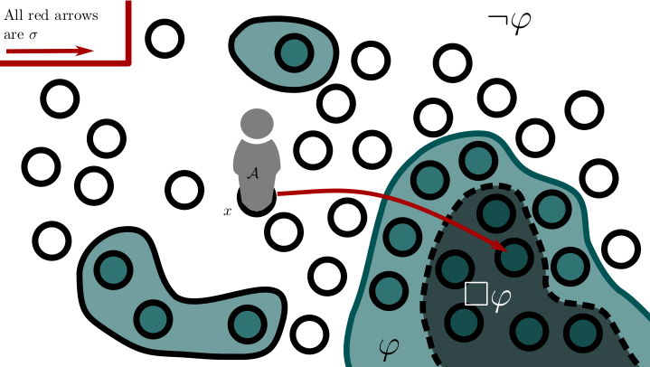
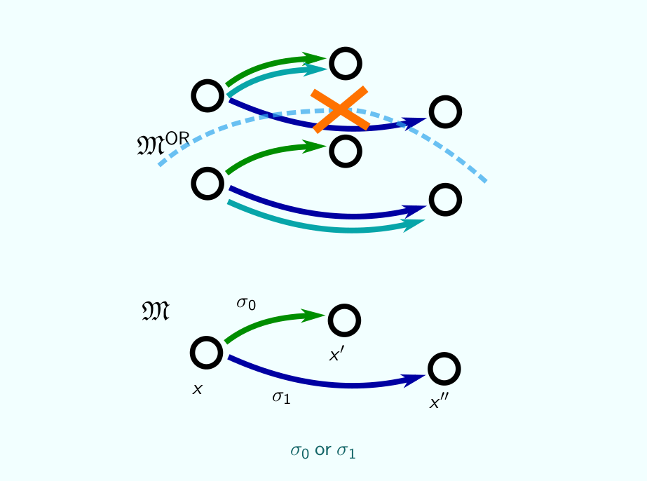
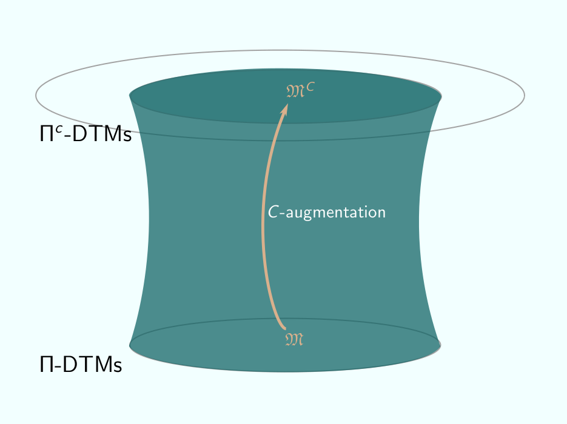
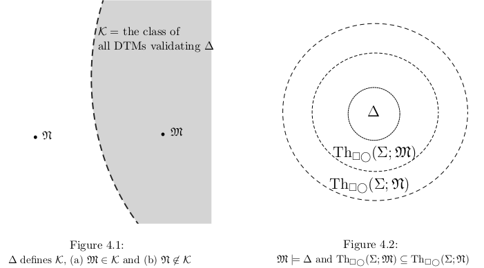
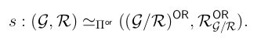
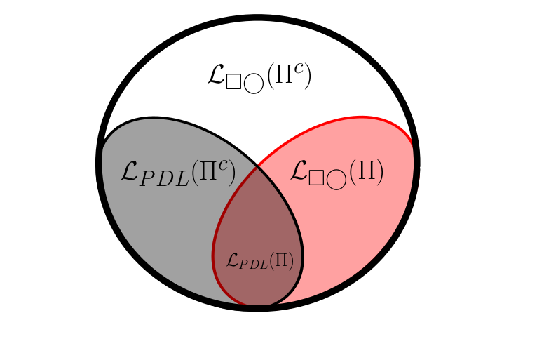

Interests
As G.H. Hardy aptly put it, "Beauty is the first test: there is no place in the world for ugly mathematics." Above all, I am interested to discover elegant mathematical theories, which succeed in capturing the mathematical essence of a topic (and all its complexity) in as clean and simple a formulation as possible. But I also have a great preference for theories with deep intuitive roots, theories which elucidate the structure of common experience. My work seeks to balance these goals, by seeing the mathematical structure of everyday existence and by putting in the detailed technical work to capture this mathematical structure in its essence.
My work so far has focused on dynamic topological logic, a branch of modal logic which combines the logic of partial functions (which is intimately connected with topics in theoretical computer science) with topological modal logic (which relates to much research in philosophy and mathematics). Some other topics which interest me include:
- Denotational semantics of programming languages
- Categorical logic
- Higher category theory & higher algebra
- Functional programming
- Homotopy type theory
- Cubical Type Theory
- Semantics of higher inductive types, and (co)modalities in HoTT
- Foundations of mathematics, especially category-theoretic and/or univalent foundations
- The history, philosophy, and pedagogy of mathematics & computer science.
- Formal epistemology & epistemic logic
- Temporal logic & the philosophy of time
Current/Recent Work
Master's Thesis
J. Neumann. Semantics of Nondeterministic Construction. Master's thesis, Carnegie Mellon University, 2020.
Slides from thesis defense
My master's thesis combines insights from modal logic, formal epistemology, and theoretical computer science into a mathematically-ambitious analysis of a very simple activity: flipping a coin. Based on an insight by my thesis advisor, Adam Bjorndahl, I develop dynamic topological logic as a suitable language for formally articulating and reasoning about the capacities of knowledgeable agents in situations where nondeterministic actions are possible. I focus on situations where our agent is able to flip a coin to choose between two possible courses of action, and rigorously examine how the uncertainty created by the coin interacts with the agent's capacity for knowledge.
This work is primarily focused on the model theory of dynamic topological logic: "equipping the agent with a coin to flip" corresponds mathematically to a kind of transformation of dynamic topological structures, which I call a program constructor. To fully elucidate the theory of program constructors requires extensive mathematical development, including the introduction of several novel notions in the theory of dynamic topological models and frames. Along the way, I develop a deep connection between program construction in the dynamic topological setting, and analogous processes in the relational model theory of propositional dynamic logic. Though this thesis leaves much work to be done, it establishes a robust framework for future exploration of this very rich topic.
     {kind=link}
{kind=link}
{kind=link}
{kind=link}
{kind=link}
{kind=link}
The Theory of Program Constructors
I continue to study the theory of program constructors. In particular, I'm working to characterize two constructors, called Uω and U∞, which were central focuses in my thesis. Relational PDL also furnishes numerous examples of program constructors to try and replicate & analyze in the dynamic topological setting, most especially the "Kleene star" operator on programs. It is furthermore an open question how to compose or combine program constructors, and how that interacts with the existing theory. Adequately answering these questions requires deeper analysis of dynamic topological logic, and likely the development of significantly more theory.
Dynamic Topological Categories
My work on dynamic topological structures has included the study of (bi)simulations, which are suitable transformations between such structures. These transformations, which prove critical in proving many of my main results, also furnish a sense in which the class of dynamic topological models (or frames) constitute a category. My interest is in studying the properties of these categories, and seeking to understand how many of the foregoing notions can be understood categorically. In particular, my suspicion is that program constructors (viewed in the appropriate way) will admit different kinds of characterization in the formal object language depending on whether they are left or right adjoint (or both) to a canonical "quotient" functor defined on refined frames. I am actively working out the details of this theory, and hope to have publishable work soon.
Lean Formalization
Though I am still in the beginning my work on the project, I am working to adapt some of Paula Neeley's work formalizing relational dynamic epistemic logic in the proof assistant Lean. My goal is to formalize the theory of program construction, both in relational PDL and dynamic topological logic, including the results of my master's thesis.